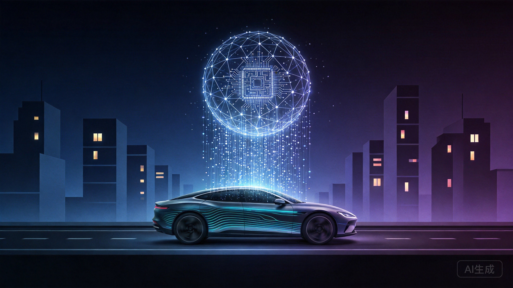
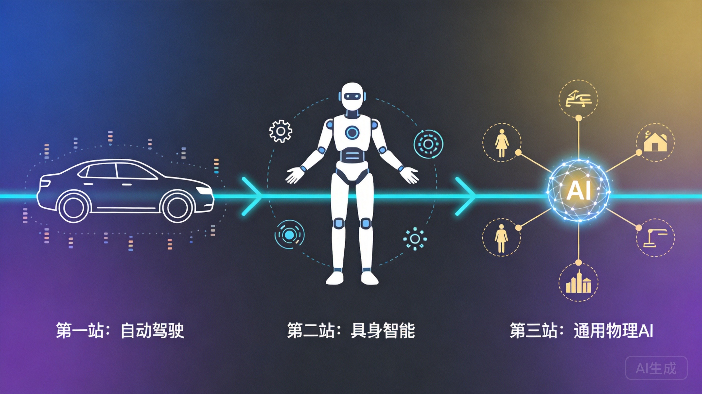

7月8日，Momenta港股上市，市值约700亿港元，募资约68亿港元。
所有人都在说"物理AI第一股"，但没人说清楚两件事：
第一，钱从哪来、到哪去？
第二，产品/服务从哪来、到哪去？
我翻了它的招股书，把这两条线画清楚。
智驾行业的终局，不是谁卖车多，而是谁在每辆车上持续抽成。
Momenta的钱来自车企，分两块：
第一块：技术开发费（固定工资）
车企买Momenta的智驾算法，不是装个软件就完事。每个车型芯片不同、传感器不同、驾驶风格不同——有的车企求稳，有的求激进。Momenta得派工程师一对一适配。
这笔钱，不管车卖不卖得动，都得给。
第二块：许可授权费（绩效分成）
车企每卖一辆搭载Momenta系统的车，Momenta抽一笔。车卖得越多，Momenta赚得越多。
招股书数据：
| 年份 | 技术开发费 | 许可授权费 | 许可占比 | 毛利率 |
|---|---|---|---|---|
| 2023 | 7.20亿 | 0.23亿 | 3.2% | 17.5% |
| 2024 | 14.45亿 | 3.18亿 | 18.1% | 49.0% |
| 2025 | 14.45亿 | 9.68亿 | 40.1% | 71.6% |
趋势：许可授权费三年增长42倍，毛利率从17.5%飙到71.6%。
这意味着：Momenta从"项目制外包"（靠技术开发费吃饭），变成了"软件授权平台"（靠许可费躺赚）。
智驾行业的钱，正在从硬件流向软件，从一次性买卖流向持续抽成。
过去：车企的钱花在硬件
买激光雷达、买芯片、买传感器 → 一次性支出 → 硬件厂商赚走大头
现在：车企的钱花在软件+服务
买算法 + 每辆车付授权费 → 持续支出 → 软件供应商（Momenta、华为）毛利率70%+，越卖越赚
对标手机行业：
苹果拿走硬件利润，但应用商店抽成30%——软件才是长期印钞机。智驾行业同理：硬件利润被压缩，软件利润上升。
结论：产业链里，谁掌握数据和算法，谁拿走最大份额。
IPO募资约68亿港元，分配如下：
| 用途 | 比例 | 金额 | 具体方向 |
|---|---|---|---|
| 研发 | 60% | 约41亿港元 | 世界模型、算法迭代、数据闭环工具链、AI算力 |
| Robotaxi商业化 | 20% | 约14亿港元 | 无人驾驶出租车规模化落地 |
| 量产车方案 | 10% | 约7亿港元 | 巩固L2+业务、新产品开发 |
| 运营资金 | 10% | 约7亿港元 | 日常运营、一般企业用途 |
关键信息：
研发是大头（60%）：Momenta认为"技术壁垒"是核心竞争力
Robotaxi占20%：赌未来，但目前还亏损
量产车只占10%：L2+业务已经能自我造血，不需要IPO募资来养
Momenta的逻辑是——用L2+的现金流养L4的烧钱研发。
Momenta的算法靠数据喂养，数据来源是100万台搭载Momenta系统的量产车：
• 累计实车里程超120亿公里
• 提炼出1亿段黄金数据（复杂场景、极端case）
• 全球24家车企合作，前10大车企中9家用Momenta
数据飞轮：
Momenta不造车、不卖硬件，只做一件事——给车企的大脑装软件。
具体产品：
• L2+量产方案：城市NOA（导航辅助驾驶），已交付100+款车型
• L4 Robotaxi方案：无人驾驶出租车，与Uber合作
• R7世界模型（2026年4月量产）：能理解物理规律的AI模型
技术路线：一段式端到端飞轮大模型
单一神经网络：传感器数据 → 直接输出控制指令
响应速度接近人类本能，城市NOA接管率仅0.1次/千公里
客户：全球24家车企，覆盖国内全部主流乘用车企业，全球前10大车企中9家。
| 客户类型 | 代表车企 | 合作车型 |
|---|---|---|
| 豪华品牌 | 奔驰、宝马、奥迪 | 奔驰CLA、S级、GLC |
| 日系 | 丰田、本田 | 广汽丰田铂智3X |
| 国产 | 比亚迪、上汽、广汽 | 仰望、腾势 |
| 美系 | 通用、福特 | 福特多款 |
第三方城市NOA市占率64.5%，比第二名（华为HI模式）高出三倍以上。
"过去十年，我们让AI学会驾驶；未来十年，我们将为家庭带来专职的阿姨、医生、教师等机器人服务场景，开创物理AI的'GPT时刻'。"
—— 曹旭东，Momenta上市仪式致辞
什么是物理AI？
一句话：能理解物理世界规律的AI。
普通AI处理文字、图片、语音——都在数字空间里。物理AI要处理真实世界的物体：车辆、行人、障碍物、天气、路面摩擦力。
举个例子：前面货车掉下一箱苹果。普通AI识别到"前方有障碍物"→减速。物理AI理解"苹果会滚、箱子会散、旁边车会躲、行人可能看"→做出更精准的决策。
Momenta R7世界模型（2026年4月量产）：
第一层：世界模型预训练（120亿公里数据，让模型"懂物理"）
第二层：世界模型仿真（闭环仿真，推演"如果我这样做，世界会怎么变"）
第三层：强化学习（模型自己博弈进化，极端场景超越人类驾驶员）
为什么自动驾驶是物理AI的最佳落地场景？
1. 数据够多：百万量产车每天跑，真实数据量级远超机器人
2. 奖惩够明确：撞没撞、急刹没、接管没——全是Yes/No判断
3. 有钱赚：每辆车既有数据又有授权费，持续喂养研发

Momenta的招股书和曹旭东的上市致辞，画出了一条清晰的物理AI进化路线——
AI在道路上理解物理世界。Momenta当前战场，100万台量产车、120亿公里实车数据。
这是物理AI唯一一个同时跑通了"数据规模化"和"商业规模化"的领域。
同一套世界模型，从车上迁移到机器人上。
• 工业场景（仓储物流、工厂产线）→ 预计2028年率先规模化
• 服务场景（医疗、养老、配送）→ 中间阶段
• 家庭场景（保姆机器人）→ 最晚但市场最大
Momenta招股书明确写了：R7世界模型"计划2027年扩展至Robotruck，未来向具身智能领域迁移"。
国务院发展研究中心预测：中国具身智能产业2030年市场规模4000亿元，2035年突破万亿。英伟达黄仁勋CES 2026断言：物理AI可重塑的制造和物流产业价值达50万亿美元。
一套世界模型，适配所有物理场景——不区分"车"还是"机器人"还是"工厂"。
曹旭东称之为"物理AI的GPT时刻"——就像GPT不挑任务，通用物理AI不挑载体。
智源研究院院长王仲远的表述：AI从"预测下一个Token"进化为"预测下一个物理状态"。
到这一步，自动驾驶、机器人、工业制造、城市管理的底层能力合而为一。Momenta不是在做一家智驾公司，而是在建物理世界的操作系统。
三站之间的逻辑链条：
第一站 → 100万台车 × 120亿公里 = 物理世界的训练数据 → 世界模型学会了理解重力、摩擦、因果、空间关系
第二站 → 同一套模型，换载体：四轮 → 双腿/机械臂 → 工业→服务→家庭，逐步渗透
第三站 → 模型不再区分载体，任何物理场景都能适配 → "物理AI的GPT时刻"
曹旭东判断：中国智驾最终只剩2-3家，头部占据70%市场份额。（创始人预判，待验证）
Momenta vs 华为
| 维度 | Momenta | 华为ADS |
|---|---|---|
| 模式 | 安卓式开放 | iOS式绑定 |
| 传感器 | 纯视觉/低成本融合 | 激光雷达+4D毫米波+摄像头 |
| 客户 | 全球24家车企 | 鸿蒙智行联盟为主 |
| 第三方NOA市占率 | 64.5%（第一） | 约20%（第二） |
| 综合测评 | 96.48分 | 97.18分（第一） |
| 毛利率 | 71.6% | 未披露 |
Momenta vs 特斯拉FSD
• 特斯拉数据规模碾压（数百万辆行驶车队）
• Momenta本土化更强（中国复杂路况适配）
• 特斯拉纯视觉，国内法规对高阶智驾有多传感器冗余要求，FSD天花板受限
• 特斯拉FSD 2026年5月已正式进入中国市场
车企自研的威胁
• 小鹏、蔚来全栈自研
• 比亚迪2026年2月发布自研智驾芯片"璇玑A3"，已进入规模化量产
• 上汽投资地平线，成立零束科技
• 车企不想让第三方掌握灵魂
曹旭东的应对逻辑：
"好的企业，既不会让内部供应商一家独大，也不会让外部供应商一家独大。"
意思是：车企需要第三方制衡自研，Momenta的价值在于"被需要"。
1. 亏损还没止住
2023-2025年，年内亏损25.7亿、32.1亿、34.6亿，三年累计亏损92亿。经调整后2025年亏损3亿，接近盈亏平衡，但还没赚。
2. 研发投入不能停
2025年研发支出18.69亿，占总营收77.5%。过去三年累计研发46亿。
3. 车企自研+特斯拉FSD入华的双重挤压
车企不会永远依赖第三方，特斯拉FSD想用数据飞轮碾压所有人。
4. 物理AI叙事的验证期
R7量产不到3个月，样本量不足以证明长期可靠性。Robotaxi、无人卡车、具身智能都还在早期。
5. 约41亿港元研发烧完，能不能建立起壁垒？
研发占募资60%，但竞争对手也在押注世界模型：华为乾崑、理想、小鹏、轻舟智航都在做"世界模型+强化学习"。Momenta的技术护城河，能守多久？
要涨还没涨的：
• 智驾软件授权模式——Momenta毛利率71.6%证明软件比硬件值钱，未来会有更多"纯软件智驾供应商"被资本追捧
• 物理AI基础设施——世界模型训练需要的仿真平台、数据闭环工具链，现在还是蓝海
• 数据闭环服务商——帮车企做数据采集、标注、训练的公司，需求会爆发
要跌还没跌的：
• 纯硬件智驾方案商——激光雷达、毫米波雷达厂商，如果车企转向纯视觉/低成本融合，硬件供应商议价能力下降
• 没有数据飞轮的L4公司——没有量产车喂养数据，纯靠路测的Robotaxi公司，在物理AI时代会被淘汰
• 车企自研芯片的替代风险——比亚迪"璇玑A3"量产，第三方芯片厂商（地平线、黑芝麻）面临挤压
Momenta上市，本质上是资本市场第一次给"物理AI"定价。
它证明了一件事：自动驾驶行业从讲故事阶段，进入了看财报阶段。
我们拆解了资金流向和业务流向：
资金流向：车企从买硬件转向买软件，Momenta从项目制转向软件授权平台，毛利率从17.5%涨到71.6%
业务流向：100万台车收集数据 → 算法训练 → L2+卖给车企+L4商业化 → 数据飞轮闭环
未来竞争不是谁的故事更大，而是谁能把方向盘背后的那套算法跑通、卖出去、越跑越快。
曹旭东判断，中国智驾最终只剩2-3家，头部占据70%市场份额。
但现实是：比亚迪2月发布自研智驾芯片，上汽投资地平线，特斯拉FSD 5月正式入华。车企不想让第三方掌握灵魂，特斯拉想用数据飞轮碾压所有人。
留给Momenta的窗口，可能没有它想的那么长。